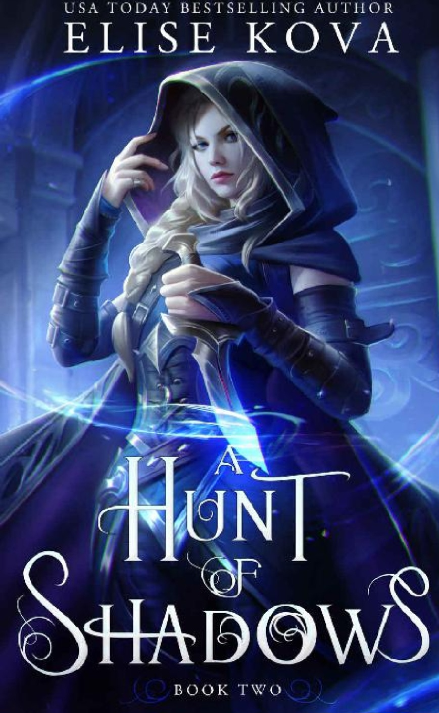
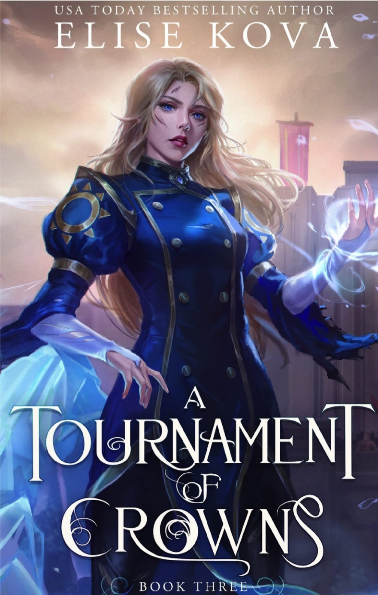
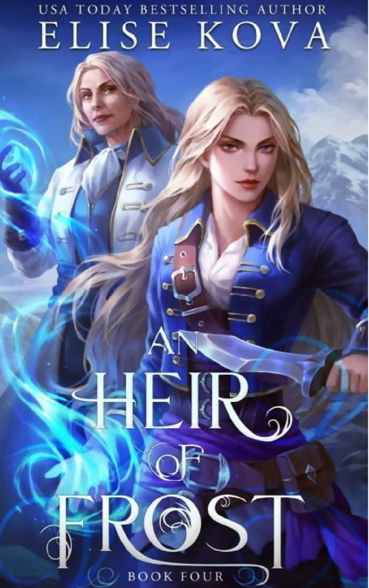

Title: A Trail of Sorcerers
Trail of Sorcerers #1
Author: Elise Kova
Publication Date: March 4, 2021
Rating: 4/5
Ice is in her blood.
Eighteen-year-old Water runner Eira Landan lives her life in the shadows — the shadow of her older brother, of her magic's whispers, and of the person she accidentally killed. She's the most unwanted apprentice in the Tower of Sorcerers until the day she decides to step out and compete for a spot in the Tournament of Five Kingdoms.
Pitted against the best sorcerers in the Empire, Eira fights to be one of four champions. Excelling in the trials has its rewards. She's invited to the royal court with the "Prince of the Tower", discovers her rare talent for forbidden magic, and at midnight, Eira secretly meets with a handsome elfin ambassador.
But, Eira soon learns, no reward is without risk. As she comes into the spotlight, so too do the skeletons of a past she hadn't even realized was haunting her.
Eira went into the trials ready for a fight. Ready to win. She wasn't ready for what it would cost her. No one expected the candidates might not make it out with their lives.
Thanks for reading!
A hunt of shadows
A Tournament of Crowns
An Heir of Frost